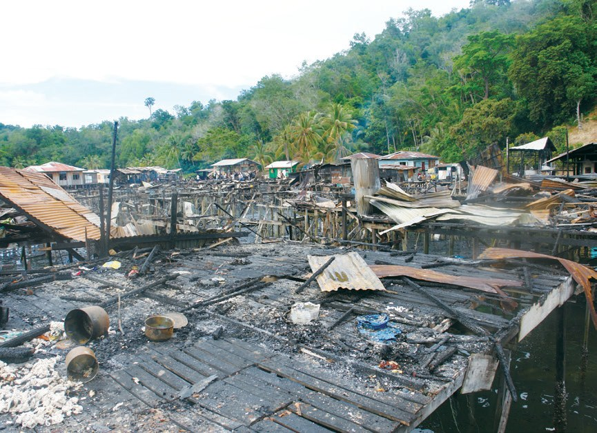
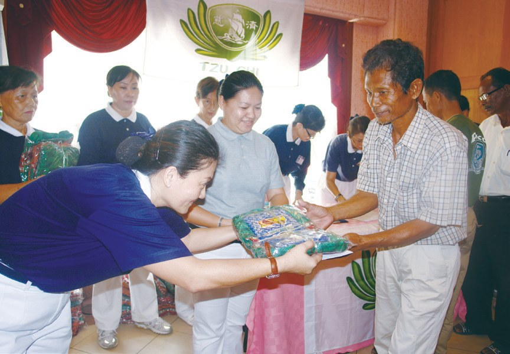
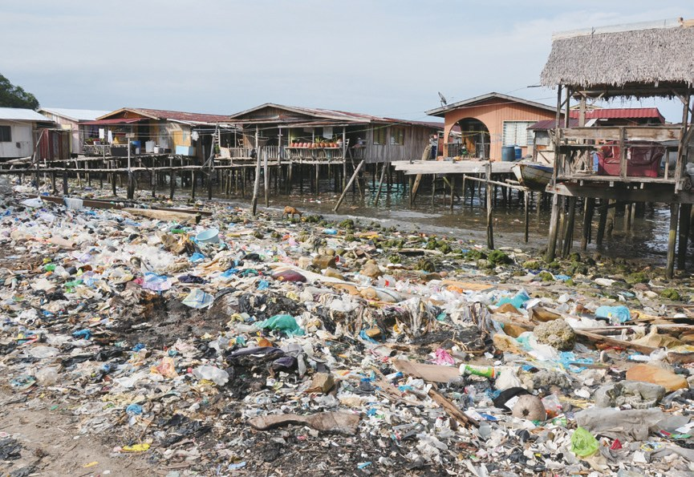
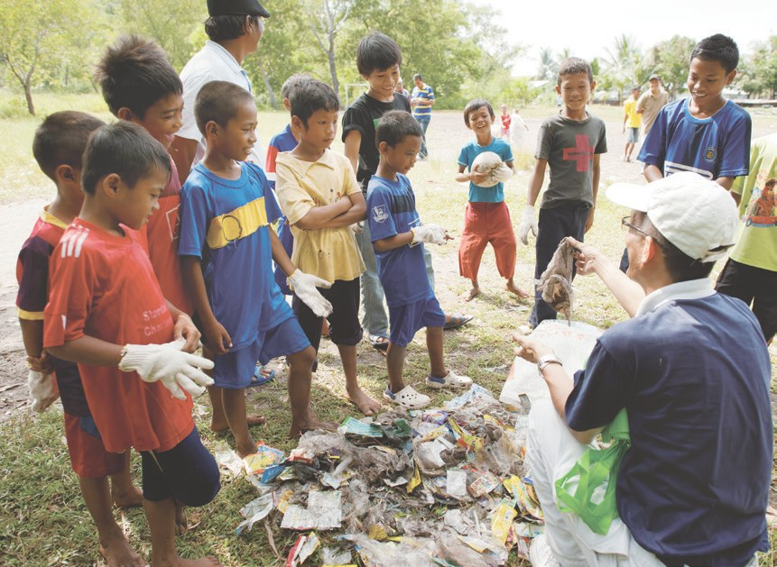
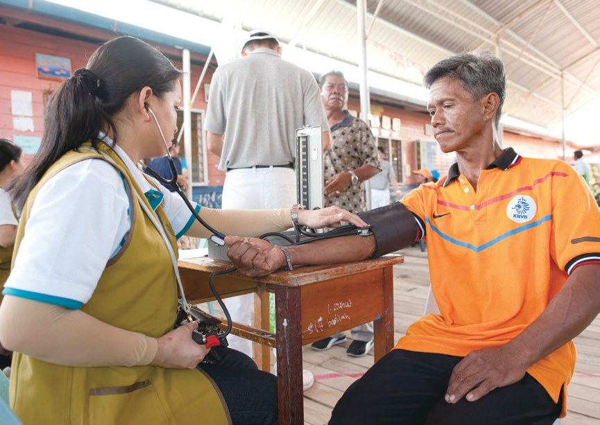
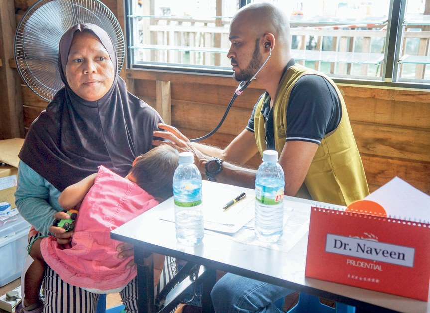

不請之師
有心行願
沒有身分的孩子，可以去上學嗎？

先別急著下結論，讀完再說說你的想法～
這一篇講加雅島：亞庇外海的一座小島，住著許多沒有大馬公民身分的居民。
慈濟從火災發放開始，接著做環保、辦義診，最後和市政廳一起辦了學習中心。
下面是原書的節錄，紅色底線是我們替你標出的轉折點。
讀之前：你覺得改善一個地方，最先要從哪裡做起？
第一個上島的慈善團體
加雅島住著什麼人？慈濟第一次上島，是因為一場火災。閱讀引導
1970年代開始，陶蘇格人和巴瑤族等族群為躲避菲律賓南部的戰爭，遷徙至加雅島，並搭建水上木屋居住。他們並非大馬公民，所以無法享有醫療、教育及合法工作的權利，以致居民大多生活困頓。

生活會有哪些難處呢？
亞庇慈濟志工前往勘災救援，關懷慰問，並發放馬幣3,500令吉與40包衣物。這是慈濟首次走入加雅島，也是首次有慈善團體主動伸援。

志工向當地居民講解慈濟的善款來源，與他們分享：慈善理念、回收寶特瓶、鋁罐等，變賣後可捐做慈善基金，並帶動居民做環保……

亞庇志工於5月間三次渡海到甘榜洛烏萊進行急難發放，讓無法出外工作的島民得以紓解經濟壓力……
坐十分鐘的船，就到了島上的甘榜洛烏萊。來看看志工發放的那一天。

三次坐船過海去發放！
從孩子教起的環保
島民住在海上，垃圾就丟進海裡。志工怎樣改變這個習慣？閱讀引導
「島民都住在海上，自然就將垃圾丟到海裡。隨手丟垃圾是一種生活習慣，而這種習慣唯有透過教育，方能改善。」
亞庇市政廳總監拿督楊文海說・p.135
為了改善環境、改變居民隨手亂丟垃圾的習慣，志工推動「垃圾換黃金」活動，呼籲居民回收寶特瓶與塑膠，賺取額外收入。
「孩子很單純，教他們回收什麼就回收什麼，所以更要灌輸正確的知識。」
志工黃俊翔說・p.135孩子撿得最起勁！

猜一猜閱讀引導
島上開始回收寶特瓶和塑膠之後，甘榜克蘇班村的垃圾少了多少？
「做環保要先從教育開始，就如印尼紅溪河的例子，慈濟人先向孩子們灌輸環保理念，進而影響當地村民，啟發他們願意為居住環境付出一分心力。可見只要有心，就能做到。」
上人慈示・p.136「……如果吉膽島做得到，加雅島也能做得到。」
楊文海參訪吉膽島環保站後坦言・p.136–137
一起學做環保！
生病了只能忍
沒有身分的居民，看一次病要冒什麼險？閱讀引導
2011年9月25日，慈濟與亞庇市政府於加雅島合作舉辦首次義診。慈濟志工加上醫護人員共逾百人組成義診隊伍，守護甘榜克蘇班村村民的健康，一個下午就有近五百位居民受惠。

平常村民想要拔牙並不容易，往往連去醫院的車資也付不起，這次的義診幫助200位村民解決了牙齒的問題。
近五百位居民來看病！
達茲瑪哈是一位沒有合法身分的居民，她說如果生病了，要到亞庇的診所看診，包括船費和醫藥費，通常需花費約150令吉。如果正好遇到海軍巡邏，為避免被盤查或扣留，即使生病也只能忍耐或吃止痛藥。

生病了只能吃止痛藥……
- 501位居民登記p.138
- 300人是非公民p.138
- 1,333人次累計服務p.138
此次參與義診的醫生陳嘉儀表示，有時工作很忙，心中會產生許多負面情緒而忘記學醫的初衷，因此每回參加慈濟的義診，都是在提醒她，當初選擇成為醫生是為了幫助別人，要謹記在心，莫忘初衷。

環境衛生若沒有完善的教育做後盾，問題最後還是會回到原點，唯有讓孩子從教育中學習各方面的知識，包括有效地與人溝通和注重健康，才能真正改善問題。
聶文古瑪醫生認為・p.139最後還是要靠教育？
先愛他們的孩子
四百多個孩子沒上學，慈濟和市政廳一起辦學。閱讀引導
猜一猜閱讀引導
2016年，志工協助市府做戶口調查。甘榜洛烏萊有多少適齡孩童沒有上學？
2018年2月，慈濟亞庇聯絡處與亞庇市政廳合作，由市政廳聘任一名教師，並提供一間教室；教室的桌椅、課本、校服及休息時間的茶點，則由慈濟提供。
慈濟出桌椅和課本！
但由於教室空間有限，無法錄取全部的孩子，所以由市政府負責篩選入學名單，第一屆最多只能招收48位學生。
「……很多父母都緊張家裡的小孩有沒有被錄取，也看到很多小朋友因沒有被錄取而哭了，希望往後能再增班，容納更多學童。」
慈濟專案協調員李永明表示・p.140小朋友都哭了……
「先生一天收入只有馬幣50令吉，如果想要讓兩個小孩進政府學校讀書，實在是難以負荷。現在七歲兒子被學習中心錄取，接受免費教育，真的減輕家裡不少負擔，謝謝慈濟來幫忙我們。」
在島上住了16年的居民璦妮莎說・p.140「這是沒人要做的事，但慈濟志工做了，也相信以後會有很多人一起來學習付出。我們先來愛他們的孩子，總有一天會感動這裡的村民。」
簡慈露表示・p.141孩子由於長期赤腳，還不習慣穿上鞋子，往往在上課時脫掉鞋子；或是因生活中水資源得來不易，所以用餐前沒有洗手的習慣，志工也以耐心及愛心一一教導。
鞋子就脫掉了！
學習中心教師努娜扎杜，每天早上七點從家中出發，花費半小時車程來到小碼頭，再搭乘由政府資助的快艇來到學習中心教學。

來島上教書！
她抱持著有教無類的心，自薦前來教育這群孩子，她認為不論孩子們有沒有身分，都應該要受教育。
他們不能來，慈濟人就要做『不請之師』，主動去幫助，這都是很令人感動的事。
上人開示・p.142停一停：誰讓你記住了？閱讀引導
選一位你印象最深的人。沒有標準答案。
有人教孩子撿垃圾，有人每天坐船來教書。哪一位讓你最有感覺？

一起回頭看看吧～
回望
依本章原文整理，每一條都標了原書頁碼。閱讀引導
背後原因
為什麼要辦學習中心

小川已經做了環保和義診，為什麼還要辦學？
- 垃圾遍地
島民住在海上，自然就將垃圾丟到海裡。p.135
- 衛生致病
居家環境衛生問題，容易被病菌感染。p.138–139
- 從教育開始
學習中心開課，沒有身分的孩子也能讀書。p.140–141
後續發展
加雅島一路走來

小禾從第一場火災，到學習中心開課，走了幾年？
- 2000
首次走入加雅島，為火災受災鄉親發放。p.133
- 2008
甘榜洛烏萊大火，發放急難金。p.133
- 2011
推動「垃圾換黃金」；首次島上義診。p.135、p.137
- 2012
楊文海到臺灣取「環保經」。p.136
- 2018
甘榜洛烏萊學習中心開課。p.141
- 2020
疫情中三次渡海急難發放。p.134
島上的改變
以前和後來
小川加雅島變了什麼？
- 甘榜克蘇班村：垃圾丟到海裡回收之後，垃圾減少了一半以上p.135–136
- 島上沒有回收廠找到廠商免費載運p.135
- 看病要花約150令吉島上義診免費看p.138
- 四百多孩童沒上學學習中心開課p.139–141
以上只整理本章寫到的事；書裡沒寫到的，我們不替它下結論。
回頭看讀前的選擇閱讀引導
市長楊文海說，隨手丟垃圾的習慣「唯有透過教育，方能改善」（p.135）；上人說「做環保要先從教育開始」（p.136）；醫生也說，衛生問題最後要靠教育（p.139）。讀完之後，你的答案變了嗎？
沒有人請也要去，是什麼樣的心？
只有你自己看得到喔！
準備好了就一起出發～